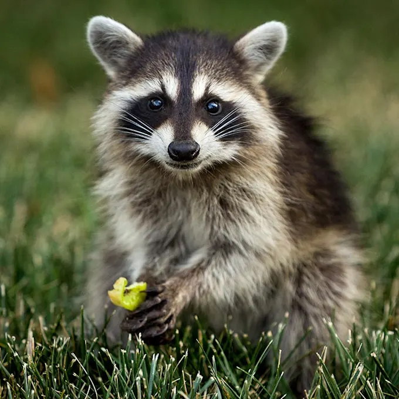
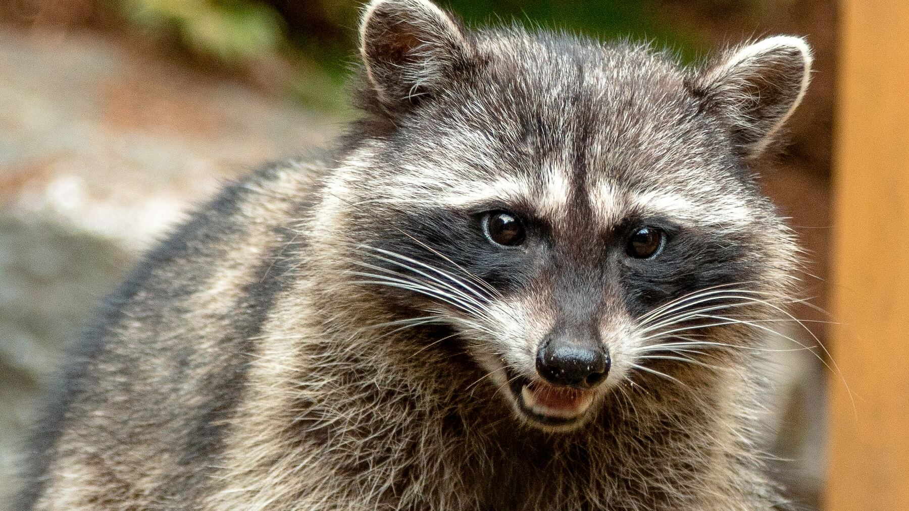
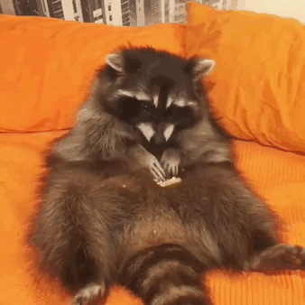

De que trata esta pagina?
Es una pagina sobre el mapache tambien conocido como oso lavador, ademas de sus origenes y especies.

Que es un mapache?
Un mapache es un mamífero perteneciente a la familia Procyonidae y al género Procyon. Son distinguidos por una caracteristica mascara negra a traves de sus ojos y poseen una cola mullida con cuatro y hasta diez anillos. Cuentan con una curiosa particularidad la cual es? Sus manos! Las manos de los mapaches tienen ciertas similitudes con la de los primates, esto es debido una convergencia evolutiva. Su distribucion de dedos es ideal para que sean capaces de apretar y manipular objetos aunque no cuentan con pulgares oponibles. Los mapaches son un animal principalmente presentes en bosques, especialmente cerca de ríos, aunque tambien ha aprendido a vivir en areas habitadas.

